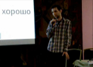
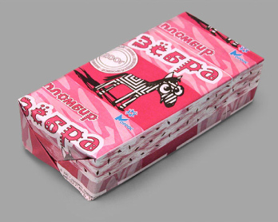
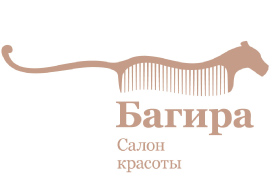
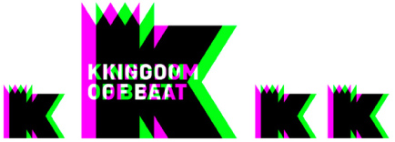
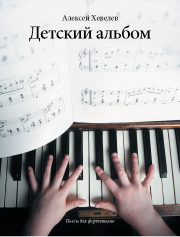
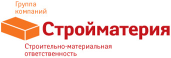
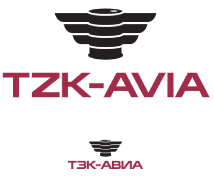
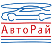

| Дизайн-студия | nfrjtdjnbvz.name |
Блог | |||||
| Лекция «Т.Ч.Х.» | |||||||
 Видео, полтора часа |
Осенью 2009 года в Ростове-на-Дону состоялось образовательное мероприятие для дизайнеров, в рамках которого дизайнер Женя Арутюнов поделился одной мыслью. Полная версия на видео, а ниже — смысловая выжимка: «Сегодня я хочу вам подкинуть одну идею. Я расскажу на словах и покажу на примерах, а вы сами думайте, что с ней делать. Когда начинающий дизайнер демонстрирует профессиональную состоятельность, его мнению начинают доверять. В этот момент увеличивается степень ответственности за результат и встаёт вопрос самоконтроля. Не всегда в команде есть арт-директор или более опытные коллеги. Зачастую решения приходится принимать самостоятельно, и достаточно быстро. Все мы не дураки, но в момент, когда что-то делаем — не можем оценивать это объективно. А времени на то, чтобы дизайн отлежался, всегда не хватает. Нужны критерии, которые можно быстро применить прямо на месте. Я предлагаю простую методику. Т.Ч.Х. Небольшое пояснение: мы сейчас не касаемся дизайна для серьёзных брендов — там уместнее использовать другие подходы. Предлагаемая методика — для типичного «провинциального» дизайна, когда есть конкретный отдельно взятый бизнес, понятны его задачи и требуются адекватные решения. «Т.Ч.Х.» означает «тупо, честно, хорошо». Это три критерия, по которым нужно проверить придуманный дизайн. Можно было бы выразиться иначе, но эти слова хорошо подходят и легко запоминаются. «Тупо» означает, что из всех решений задачи нужно выбрать самое прямолинейное, очевидное, «лобовое». Решение, не содержащее преград для понимания. «Честно» — значит не врать без необходимости, быть точным и грамотным. Нельзя искажать истину по незнанию и невнимательности. Можно прибегнуть к художественному вранью, когда вы знаете, зачем это делается и сможете при необходимости объяснить его смысл. «Хорошо» — это совокупность знаний и навыков в работе с цветом, формой, композицией, типографикой и со всеми прочими аспектами. Это элементарная прикладная профессиональная ответственность. Если вы сделали тупо и честно — этого недостаточно, должна ещё быть эстетическая привлекательность. Но не в первую очередь, а примерно в приведённом порядке: сначала эффективность, затем точность, а потом уже всё остальное. Теперь несколько примеров. Объясню, как они были подобраны. Нужны примеры, близкие к нашей действительности. Нужны как положительные, так и отрицательные примеры. И нужны работы, которые можно смело критиковать, зная, что ничего важного не упускаешь. Поэтому в качестве примеров я буду использовать некоторые свои старые и не очень старые работы. |
||||||
 Задача: придумать персонаж для мороженого «Зёбра». Тупо, хорошо, но не честно — эта зебра (так уж вышло) сделана из осла. |
|||||||
 Логотип салона красоты. Тупо, честно, но вовсе не хорошо |
|||||||
 Логотип танцевального фестиваля. Тупо, честно, хорошо. |
|||||||
 Обложка детского сборника фортепианных пьес. Тупо, честно, хорошо. |
|||||||
 Название и логотип для компании, продающей стройматериалы. Тупо, честно, хорошо. |
|||||||
 Логотип компании, продающей авиационное топливо. Тупо, честно, хорошо. |
|||||||
 Логотип компании «Авторай». Тупо, честно, хорошо. |
|||||||
Плохой дизайн делает туманные намёки. Хороший дизайн уважает ваше время и сразу переходит к сути.» |
|||||||
| © Е. Арутюнов, 2007—2011 gjxnf@nfrjtdjnbvz.name |
|||||||